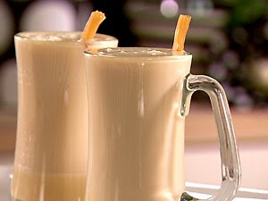

Butterbeer
Butterbeer

Description
Perfect for the holidays!
Ingredients
- evaporated milk
- butterscotch sauce
- whipped butter
- vanilla cream soda
Steps
- v
- Heat in microwave for 1 minute.
- Remove and stir until butter has melted and incorporated into mixture.
-
- Divide butterscotch mixture between 2 (10 to 12-ounce) mugs.
- Fill mugs with heated cream soda and stir thoroughly.